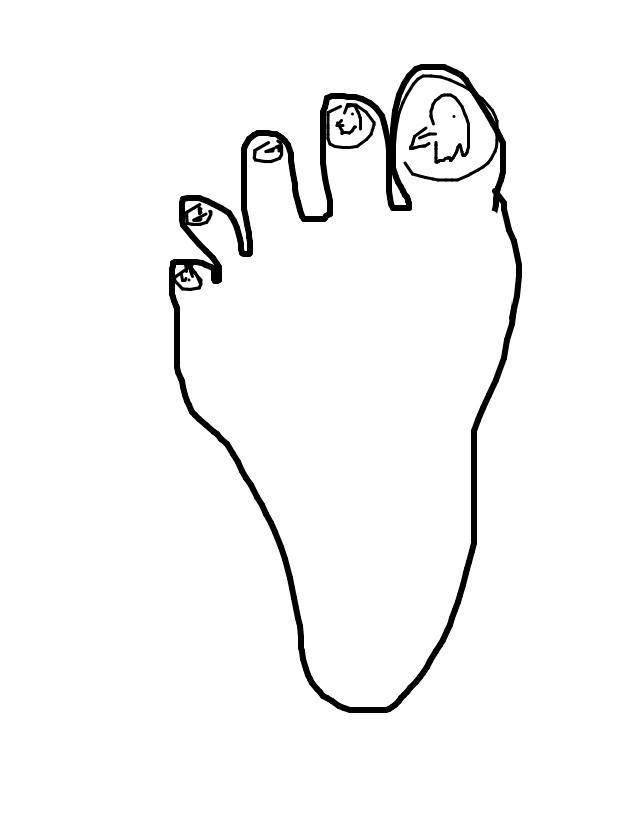
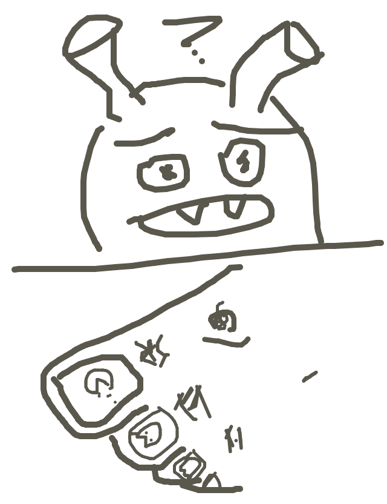

so jackcheng wrote...
Toenails with eagles on them.
so irondavy drew...
so mike wrote...
Shrek got a pedicure. It was interesting because though not vocal about his love for classic arcade, he went with images of the ghosts from Pacman.
so matt drew...
so tag wrote...
A fungal nail infection faces the paradox of choice.